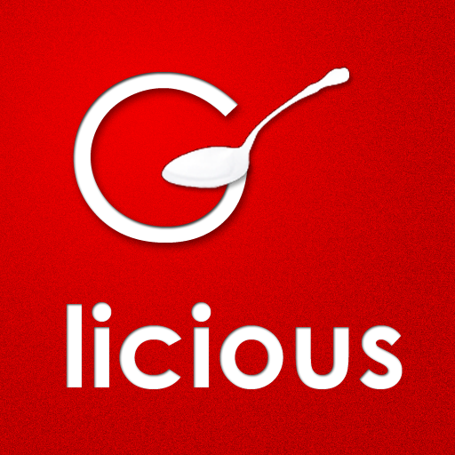

About
G-licious is a quick and easy way to check the Dining Menu in the Grinnell Dining Hall. You can check the menu for today, tomorrow, or any day in the next week as and when a new menu becomes available. G-licious also provides serving and nutritional information. G-licoius is fully supported on iOS, Android, and Windows Phone and is optimized for both phone and tablet layouts.
Get G-licious
G-licoius is available for download at the following locations:
Application Packages
- iOS -- https://itunes.apple.com/us/app/g-licious/id523738999?mt=8
- Android -- https://play.google.com/store/apps/details?id=edu.grinnell.glicious&hl=en
- Windows Phone -- http://www.windowsphone.com/en-us/store/app/glicious/47c4271a-6367-481f-829a-03cf586cf56c
Source
Github -- https://github.com/GrinnellAppDev Other Info
The app will only allow you to select the dates on which a menu is available on the servers. These dates are updated (usually after classes on Friday) to show you the next week's selection. On our settings page, you will have access to filters you can use depending on your dietary preferences.
Contributors
Special Thanks to the Grinnell Appdev Team! David Cowden '13 (founder, co-manager) Ellen Finnegan' 13 Maijid Moujaled '14 (co-manager) Colin Tremblay '14 Lea Marolt Sonnenschein '14 Travis Law '15 Spencer Liberto '15
For App Support, feedback, suggestions etc. please email appdev@grinnell.edu
Grinnell AppDev Alumi:
Dugan Knoll '12